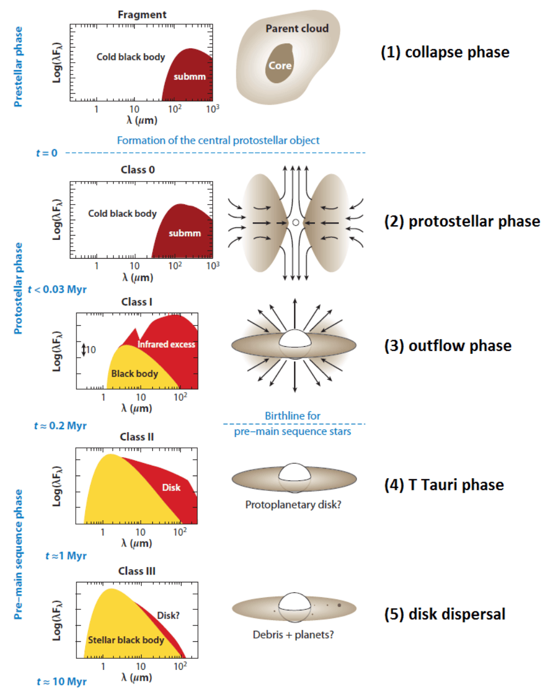
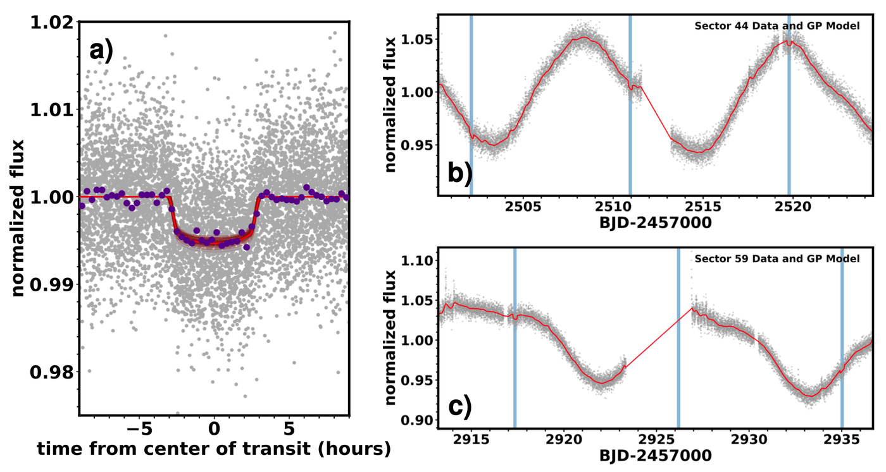
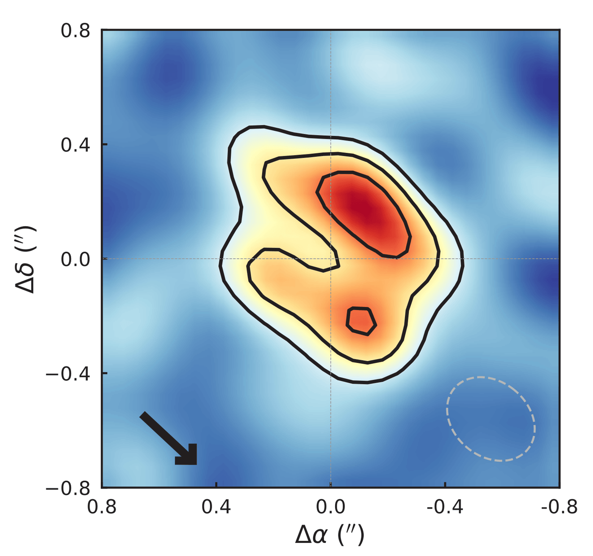
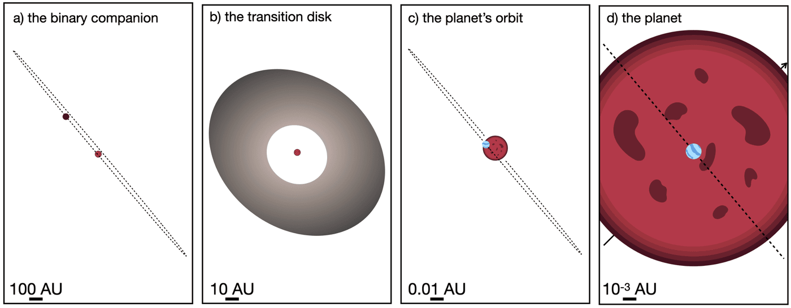

Circumstellar disks are natural consequences of angular momentum conservation as molecular clouds collapse to form protostars. Young stars are initially embedded in gas-rich envelopes, but after ~1 Myr they become optically visible (the T Tauri phase) as the dust and gas settles into a disk and evolves through viscous accretion. These so-called protoplanetary disks are thought to form planets within 10 Myr. After this, their gaseous disk material dissipates from the inside out, first forming a transition disk (an outer disk with a cavity), then a dusty debris disks, and finally a mature planetary systems.
Given what we see in our own Solar System it is natural to assume most planetary systems form in pancake-flat environments with the planet, star, and disk all within 5-10 degrees. This is consistent with simple angular momentum arguments and long-standing theories of star and planet formation (Kant 1755).
Because of this, it was assumed we could not find transiting planets younger than about 5 million years. A transiting planet must be edge on - that is, in between the star and our line of sight. But if the planet forms aligned with the disk, the disk must also be edge on. In that case, the disk will block our view of the planet and the star. So we had previously skipped over the youngest star-forming regions where most stars still have their disks.
One day we decided to look for planets in Taurus-Auriga (1-5 Myr). Part of the motivation for this was for a proposed NASA space mission (more on that in another highlight). It was a bit of a reach, a kind of 'let's just give it a try' situation. I was rather certain we would not find anything. Indeed, when I got a slack message noting a promising candidate planet, I assumed it was a planet around one of the disk-free stars in the group.

I changed my tune when I took a deeper look at the star - IRAS 04125+2902. The system has a clear disk, detected in both the infrared excess and resolved with the Submillimeter Array (SMA). The SMA image is shown here. It shows two important things - the inner region of the disk is relatively clear, and the disk is nearly face on. That is the exact kind of arrangement where we could detect a planet. The disk is 'warped' or 'broken' in such a way that we can see the inner system and hence detect the planet.

This orbital configuration is weird. How is that the disk and planet became misaligned? Did the planet shift as part of its migration? Or did something warp the outer disk after the planet formed? We noticed there's a binary companion, which could explain this. But the binary orbit is consistent with both the planet's orbit and the star's rotation. That is, everything is aligned, except the disk.

This suggests something warped the disk after the fact, but still doesn't tell us what. Also, whatever it was, didn't seem to impact the binary.
Aside from the orientation, there are a lot of other interesting things about this system. One is the age. It wasn't even clear if planets could form by 3 Myr, at least not at a level that is recognizable as a transiting planet (as opposed to a cloud of goo). This is significantly faster than, say, the formation of the Earth (more than 10 million years).
For now, this is the only example we have of such a young close-in planet. But we are actively looking for more!